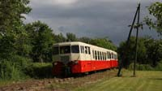

|
07 Juin 2009 - Balade sur le chemin de fer touristique du Bas-Berry Le TBB (http://www.traintouristiquedubasberry.com/) est un chemin de fer touristique à voie métrique qui exploite la partie déclassée au sud de la ligne du Blanc-Argent. Son domaine se limite au nord à quelques dizaines de mètres de la gare de Lucay-le-Mâle, encore exploitée par la SNCF et au sud par la gare d'Argy. La plateforme de la section Buzançais-Argy étant réutilisée par un embranchement à voie normale. La gare principale du TBB se situe à Ecueillé, ainsi que ses ateliers. Il a fallu 14 ans à l'association pour sauvegarder la ligne, la remettre en état et faire rouler son premier train. Cette sortie fut organisée par le club de modélisme de Conflans-Ste Honorine CCAC qui affrêta l'autorail Verney X224, le seul de la série non modernisé, pour un aller-retour vers Lucay le matin et un aller-retour vers Argy l'après-midi avec la remorque Verney XR 701. Un beau soleil nous a permis de ramener de très beaux clichés de cet autorail de 1950 dans son cadre buccolique. |
| |
||
|  | ||